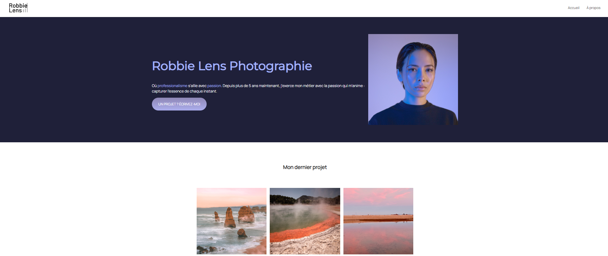

Projet¶
Plongez vous dans la peau d’un développeur web et concevez votre propre site !
Cahier des charges¶
Liberté et créativité
Vous avez carte blanche concernant le contenu de votre site. Prenez un sujet qui vous parle et que vous aimez !
Sachez par contre que votre site sera hébergé et accessible pour le reste du monde, donc attention aux choses suivantes:
Pas de contenu innaproprié (appel à votre bon sens)
Respect du droit d’auteur (notamment pour les images)
Pour ce qui est de la forme, voici les contraintes à respecter:
Consignes de base:
Au minimum 3 pages HTML liées entre elles par des liens hypertextes (2 pages pour les projets en solo)
Un seul fichier
.cssest utilisé pour l’ensemble de votre siteLes 3 pages ont toutes une structure différente (pas de copié collé avec simplement le texte ou les images qui changent)
Les 3 pages ont suffisamment de contenu visuel et textuel (elles ne semblent pas vides)
Un menu vertical ou horizontal permet de passer sur les différentes pages du site
Un logo cliquable permet de revenir à l’accueil du site depuis n’importe quelle page
Une interaction inédite est présente sur le site (ex: un formulaire, un bouton qui fait quelque chose, etc.)
Un travail régulier a été constaté lors des TPs (ex: pas de site fait juste avant le rendu sans que j’ai pu en voir l’évolution)
Design et ergonomie:
Le design et le style des pages sont cohérents et consistants
Le site est facile d’utilisation, il est agréable de naviguer dessus (ex: les liens sont bien visibles)
Les visuels sont de bonne qualité
La syntaxe et l’orthographe des textes sont correctes
Utilisation pertinente de balises html:
Le nom du site doit apparaître dans l’onglet du navigateur pour chaque page
Votre site doit au minimum avoir un titre bien visible en page d’accueil
Tous vos paragraphes doivent être dans des balises
<p>Au moins un lien vers un site externe doit être présent
Au moins une liste ordonnée ou non ordonnée est présente
Des images doivent être présentes et avoir des tailles adaptées
Au moins une infobulle est présente sur toute le site
Utilisation pertinente de propriétés css:
Des classes css pertinentes sont utilisées avec les balises
<span>et<div>Les propriétés
coloretbackground-colorsont utiliséesAu moins une propriété de style de texte est utilisée (ex:
text-align)Des bordures et ombres sont présentes
Des blocs
divsont utilisés de manière pertinente pour regrouper des élémentsDes marges intérieures et/ou extérieures sont présentes
Des blocs sont alignés horizontalement avec Flexbox (ex: menu horizontal)
Au moins un élément change de style au survol de la souris
Structure du code et du projet:
Toutes les images sont regroupées dans un sous-dossier
imagesLe code ne contient pas trop d’erreurs de syntaxe (ex: balises mal formattées)
Le code doit être propre et facilement lisible (indentations/décalages à droite corrects)
Bonus:
Le site contient plus d’éléments que le minimum requis
Le site est particulièrement beau ou original
Le site contient un élément css ou javascript particulièrement complexe non vu en classe
Le site contient des éléments créés par vous-même (ex: images, logo, videos, etc.)
Un exploit technique dépassant le cadre du cours est présent
Suivre le stric minimum des critères du cahier des charges vous garantira la note de 5.
La note maximale est atteignable en ajoutant des éléments bonus.
Plagiat et tricherie
Vous n’êtes pas autorisé à simplement copier-coller du code trouvé sur Internet où dans d’autres groupes.
Il est cependant autorisé de s’inspirer de code d’autrui et de le modifier pour le faire sien. Dans ce cas, il vous est demandé d’ajouter un commentaire dans le code indiquant sa source.
L’utilisation d’IA génératives telles que ChatGPT est autorisée à des fins d’assistance uniquement. Tout code produit par une IA doit être compris par les membres du groupe et indiqué comme tel dans un commentaire.
Enfin, chaque ligne de code doit pouvoir être expliquée et défendue par le groupe.
Exemple¶
En guise d’exemple, vous pouvez voir le contenu du site fictif d’une photographe ici.
Il s’agit à la base d’un site développé par OpenClassrooms pour enseigner le développement web que j’ai légèrement modifié afin qu’il colle avec notre parcours d’apprentissage.
Héberger votre site¶
Héberger son site permet de le mettre à disposition pour le reste du monde sur le Web. Héberger son site requiert 2 choses:
Un nom de domaine pour votre site (ex: mon-super-site.ch). Ces noms de domaines doivent être loués à l’année (environ 5 CHF par an pour un nom de domaine
.ch). Vous pouvez contrôler si un nom de domaine est déjà utilisé et connaître son prix ici:https://www.infomaniak.com/fr/domaines/tarifs/ch.Un serveur sur lequel vous allez déposer vos fichiers HTML et CSS et qui sera relié au reste du Web. Ces serveurs se louent également, généralement par mois. Les prix peuvent grandement varier en fonction de la qualité du service (ex: taille de stockage, sécurité, débit maximal, etc). Pour un site statique comme le votre, il faut généralement compter moins de 10 CHF par mois.
Sachez que beaucoup de plateformes permettent des offres combinées comprenant un nom de domaine et un serveur à prix réduit. L’autre avantage de ces hébergeurs est qu’ils garantissent la plupart du temps un bon référencement par les moteurs de recherche comme Google. On appelle cela le SEO.
Vous pouvez trouver une liste récente (2024) qui compare différentes plateformes suisses ici: https://hellosafe.ch/hebergeurs.
La procédure à suivre une fois les paiements effectués dépendent complétement de la plateforme choisie. Dans le cas où vous choisiriez cette option, n’hésitez pas à me contacter pour vous aider à mettre tout cela en place.
Astuce pour héberger son site gratuitement¶
Il est possible d’héberger gratuitement son site sur la plateforme Github (https://github.com/). Il s’agit d’une plateforme de partage de code pour les développeurs mais elle permet également d’héberger des pages statiques, ce qui est normalement votre cas.
La 1ère étape est de se créer un compte sur la plateforme Github.
Quand c’est fait, il suffit de suivre ce tutoriel pour créer un repository sur lequel vous déposerez vos fichiers: https://docs.github.com/fr/pages/getting-started-with-github-pages/creating-a-github-pages-site.
Sachez toutefois qu’avec cette méthode, l’url de votre site sera par défaut : https://<pseudo>.github.io. Dans le cas où vous voulez un nom de domaine customisé, il reste nécessaire d’acheter un nom de domaine. De plus le stockage offert par cette méthode est de 1 GB au maximum.
Dans le cas où vous opteriez pour cette méthode, je suis à disposition pour passer un peu de temps à vous aider à la mettre en place car j’ai déjà hébergé plusieurs sites de cette manière.